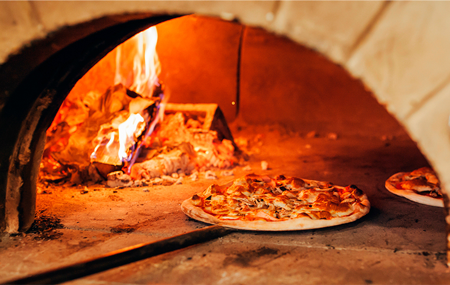

Informe de retroalimentación con IA y verificación de criterios
Informe de retroalimentación con IA
Sometí mi código HTML completo a Claude (Anthropic) utilizando el prompt obligatorio centrado en accesibilidad y semántica. La IA identificó cinco recomendaciones, de las cuales aplicaré cuatro.
Recomendaciones útiles aplicadas: La más importante fue corregir el cierre de <header>, que tenía la etiqueta de apertura repetida en lugar de </header>. Este error rompía la estructura semántica del documento, ya que el navegador no sabía dónde terminaba el encabezado, lo que podía hacer que el <nav> y el <main> quedaran anidados incorrectamente dentro de él. También corregí lang="ep" por lang="es", ya que "ep" no es un código de idioma válido (ISO 639-1) y los lectores de pantalla dependen de ese atributo para elegir la pronunciación correcta. Cambié las rutas de imágenes de barras invertidas (assets\img\...) a barras normales (assets/img/...), porque las invertidas son sintaxis de Windows y pueden fallar al subir el sitio a un servidor o GitHub Pages. Finalmente, eliminé el <hr> antes del <footer>, ya que esa línea se interpretaba como una separación temática que en realidad no existe entre el contenido principal y el pie de página.
Recomendación no aplicada: La IA sugirió agregar un <h2> visualmente oculto antes del <footer> con el texto "Información de contacto". No la aplicaré porque añadiría complejidad extra (ocultar elementos con CSS) que está fuera del alcance de esta práctica, y el <footer> ya contiene un párrafo "Contacto:" que orienta al lector de forma suficiente.
Evaluación del análisis de la IA: En general, la IA identificó correctamente tanto el error más grave (el <header> mal cerrado) como las fortalezas reales del código, como el uso correcto de alt="" en la imagen decorativa, el alt descriptivo en la imagen informativa, el aria-hidden="true" en los tres íconos decorativos y el aria-label del <nav>. No detecté errores ni sesgos evidentes en su análisis; sin embargo, no profundizó en si el video de YouTube cumplía completamente los requisitos del ejercicio más allá de la accesibilidad básica.
Cambios reales realizados: corrección de </header>, cambio de lang="ep" a lang="es", rutas de imágenes con /, y eliminación del <hr> antes del footer.

Historia de la pizza
La pizza es un plato de origen italiano que se ha convertido en uno de los alimentos más populares en todo el mundo. Se cree que la pizza moderna se originó en Nápoles, Italia, en el siglo XVIII, aunque sus raíces pueden remontarse a la antigüedad. La pizza tradicional napolitana se caracteriza por su masa delgada y crujiente, salsa de tomate fresca, mozzarella de búfala y albahaca. Con el tiempo, la pizza ha evolucionado y se han creado numerosas variaciones en todo el mundo, adaptándose a diferentes gustos y culturas culinarias.
Historia de nuestra pizza
En nuestra pizzería, nos enorgullece ofrecer una pizza que no solo es deliciosa, sino que también está hecha con ingredientes de alta calidad y un toque de amor. Nuestra masa se prepara diariamente con harina fresca, agua, levadura y un poco de sal, lo que le da esa textura perfecta entre crujiente y suave. La salsa de tomate se elabora con tomates maduros y hierbas aromáticas, mientras que el queso mozzarella se selecciona cuidadosamente para garantizar su frescura y sabor. Cada pizza se hornea a la perfección, asegurando que cada bocado sea una experiencia culinaria inolvidable.